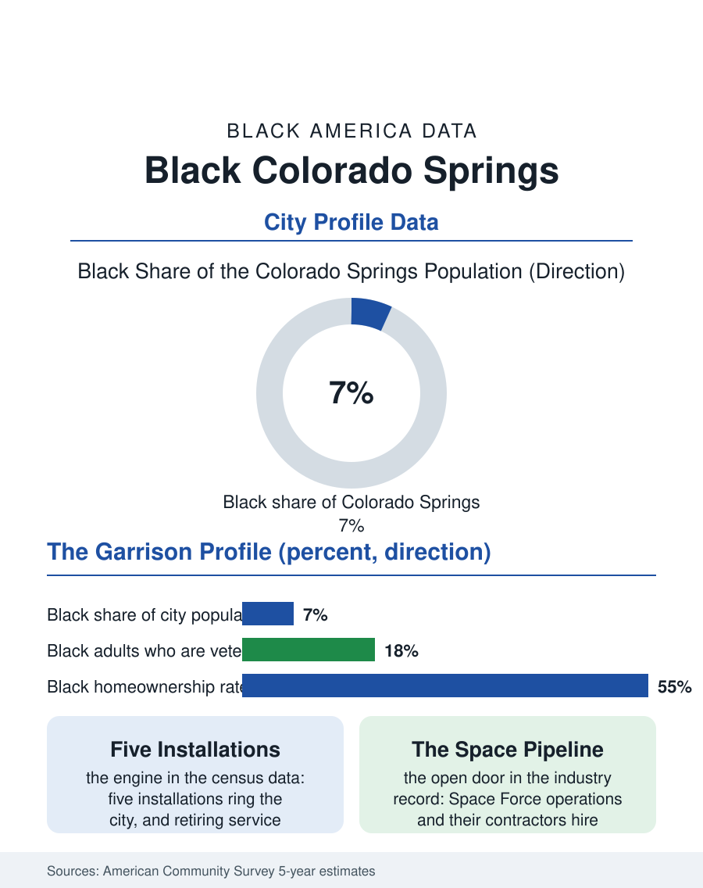

Black Cities
The Garrison City: Black Colorado Springs
Five military installations built a Black community of thirty-three thousand with a veteran profile and a Space Force horizon. The Colorado Springs file.

Colorado Springs, a city of about four hundred eighty thousand at the foot of Pikes Peak, holds one of the Mountain West's most substantial Black communities, roughly thirty-three thousand residents, around seven percent of the population, a share several times the Colorado average. The community's engine is unambiguous in the census data: five military installations ring the city, and the armed forces have been assembling Black Colorado Springs for three generations. This article reads the Colorado Springs file.
The Garrison Town's Community
Fort Carson, Peterson and Schriever Space Force bases, Cheyenne Mountain, and the Air Force Academy make Colorado Springs one of the most military cities in America, and the military is the most integrated large institution in American life, which writes itself directly into the local data. Black service members arrive on orders, raise families in the city's subdivisions, and retire into the community at rates that built whole neighborhoods, particularly on the city's southeast side, the community's modern center of gravity. The result is a Black population with a profile the surveys make unmistakable: a high share of veterans, elevated rates of federal employment and military retirement income stabilizing household budgets, and homeownership that runs above the Black national pattern, purchased in a market that military transfers keep liquid. The older civilian community predates the bases' dominance, rooted in the city's early service economy and its churches, but the garrison economy absorbed and multiplied it. The institutions reflect both layers: historic congregations on the near-east side, the academy's and bases' own networks, Divine Nine chapters, and a civic presence that includes the city's Black chamber and its elected officials, operating inside a metro long known for political conservatism, a juxtaposition the community's leaders discuss with the ease of long practice.
The Numbers on the Front Range
The American Community Survey's profile shows the military dividend and its limits. Median Black household income in the metro runs comparatively strong against the atlas's city set, buoyed by dual federal incomes and retirement annuities, while a wage gap to the city's overall median persists, driven by the civilian segment of the Black workforce, the service and retail employment of the broader economy. Poverty rates run below the Black national average, and educational attainment runs above it, with the bases' tuition benefits and the local university and community college branches feeding a credential pipeline that starts in uniform. Growth is the file's headline trend: the metro is among the faster-growing in the Mountain West, and its Black population has grown with it, the southeast side's subdivisions and new congregations registering the increase in successive survey cycles, fed by the Space Force's expansion and by Denver's housing prices pushing families of all backgrounds down the interstate. The risks in the file are the garrison's own: deployment cycles that strain the family structures the surveys count, force realignments that could reorder the economy by a pen stroke in Washington, and a housing market whose appreciation, while wealth-building for owners, is pricing the civilian Black workforce toward the metro's edges.
Space City's Ground Crew
The forward chapter has a name: space. The concentration of space operations, the Space Force's headquarters functions, the defense contractors of the airport corridor, makes Colorado Springs the ground station of the American space enterprise, and its technical workforce demand is compounding. The community's position in that economy is the file's open question. The cleared, credentialed, veteran workforce the space industry hires from is a workforce in which Black veterans are heavily represented, and the pipeline from uniformed space operations to contractor engineering and program management is one of the most promising professional channels in the entire atlas for exactly the population this city holds. The community's institutions have read the map: STEM programming aimed at the bases' children, scholarship funds in engineering, and contractor-diversity conversations with the primes are documented parts of the local record. Colorado Springs will not become a majority-Black city in any projection; it is something rarer in the file, a place where Black America is woven into the nation's most strategic industry through the institution that integrated first. The census counts seven percent. The bases' family housing, the southeast side's new rooftops, and the retirement ceremonies that keep converting soldiers into Springs citizens say the share is structural, growing, and built to stay.
More in Black Cities
Black Atlanta: Population, Distribution, and Growth of a Black Metropolis
Metro Atlanta holds more than two million Black residents — roughly one in three, second only to New York. The suburban distribution, migration history, and composition of Black Atlanta in the census data.
Black New York: The Largest Black Population in America
The New York metropolitan area holds about 3.4 million Black residents — more than any metro in the nation — and the city itself about two million. The census profile.
Black Washington: The District and the Metro
The Washington metro holds about 1.6 million Black residents, and the District itself — long a majority-Black city — now records a Black share near 41 percent. The census profile.
Source: U.S. Census Bureau, American Community Survey 5-year estimates for the Colorado Springs, CO metropolitan area; Department of Defense installation data.